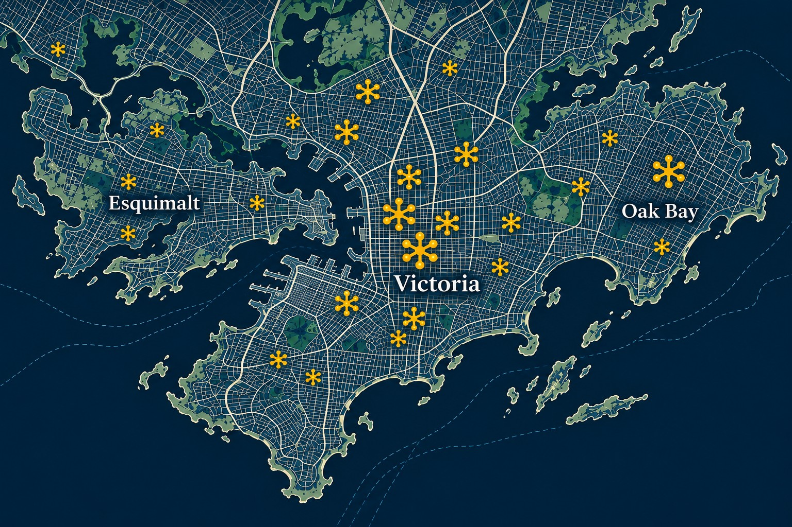

See where people recommend.
Explore local businesses through recommendations from people who know their work.
Explore the map How Lightflakes work
What is a Lightflake?
A Lightflake marks a business on the Sidedoor Review map. As people recommend the business, its presence on the map grows.
Questions about the map
How do I explore local recommendations?
Open the Sidedoor Review map and zoom into the area you want to explore. Look for a Lightflake to find a business people have recommended.
Does the illustration show current recommendations?
The Greater Victoria illustration shows how Lightflakes appear. Open the interactive map to see the businesses and recommendations currently displayed.
How are Lightflakes and Sidedoor Review connected?
Sidedoor Review powers Lightflakes. This site introduces the map, and Sidedoor Review hosts the interactive experience.